Image creditsАвторы изображений
The photographs are resized for this guide. Seven landmark photos use crops from Melbourne Visitor Explorer. The park illustrations are identified below.
Фотографии уменьшены для путеводителя. Семь снимков достопримечательностей кадрированы проектом Melbourne Visitor Explorer. Ниже указано, где использованы иллюстрации парков.

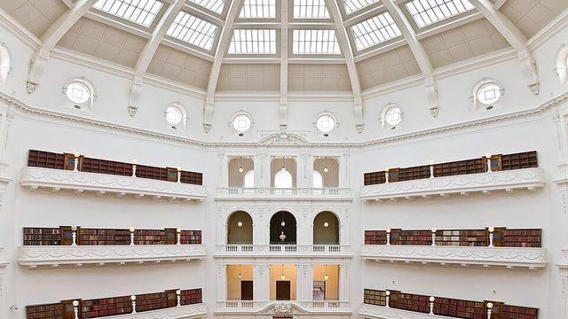
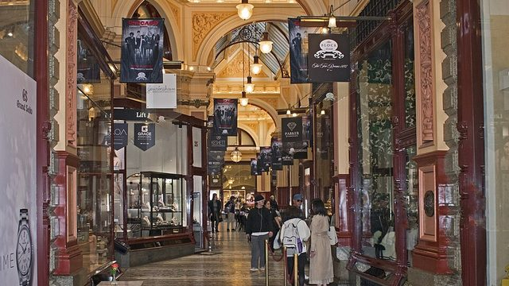
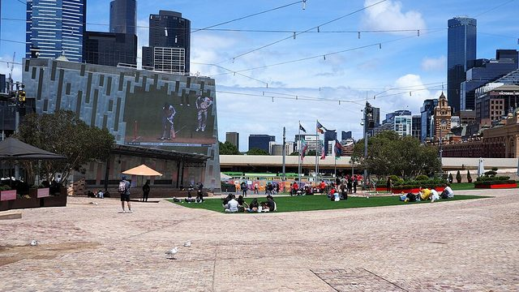
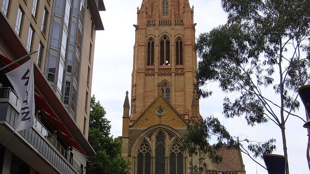
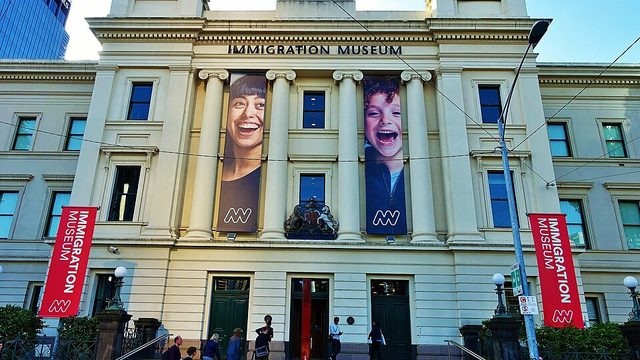

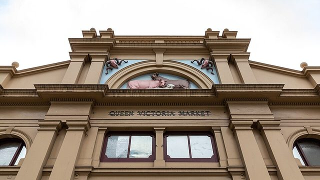
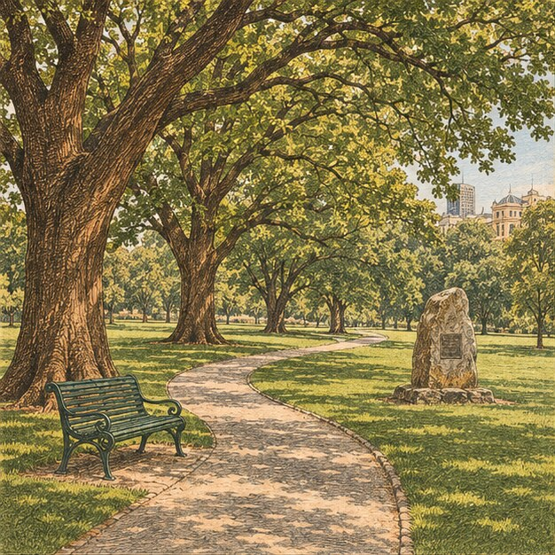
Flagstaff Gardens
Сады Флагстафф
Original park illustration created with AI for this guide · Иллюстрация парка, созданная с помощью ИИ для путеводителя
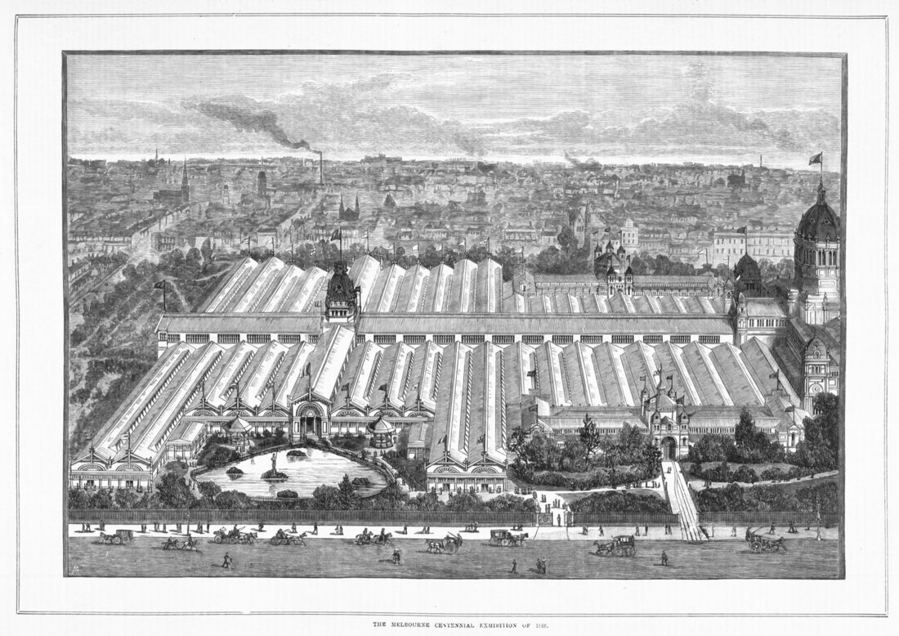
Carlton Gardens
Карлтонские сады
Historical engraving (1888) · Историческая гравюра (1888)
The Melbourne Centennial Exhibition of 1888, artist unrecorded · Public domain
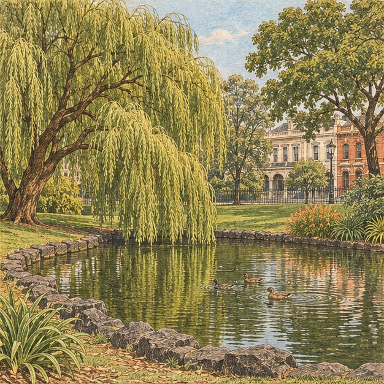
Treasury Gardens
Сады Трежери
Original park illustration created with AI for this guide · Иллюстрация парка, созданная с помощью ИИ для путеводителя
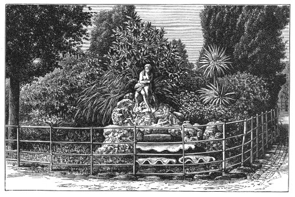
Fitzroy Gardens
Сады Фицрой
Historical engraving (1886) · Историческая гравюра (1886)
Howard Willoughby, Australian Pictures (1886); engravings by E. Whymper and others · Public domain
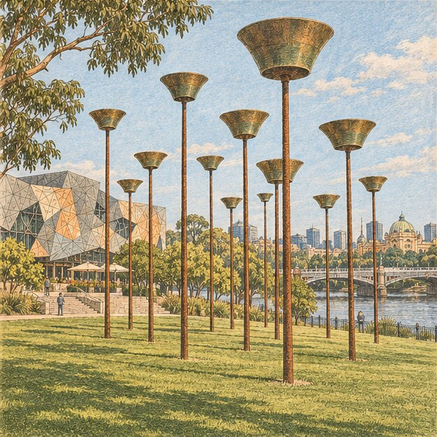
Birrarung Marr
Парк Биррарунг-Марр
Original park illustration created with AI for this guide · Иллюстрация парка, созданная с помощью ИИ для путеводителя
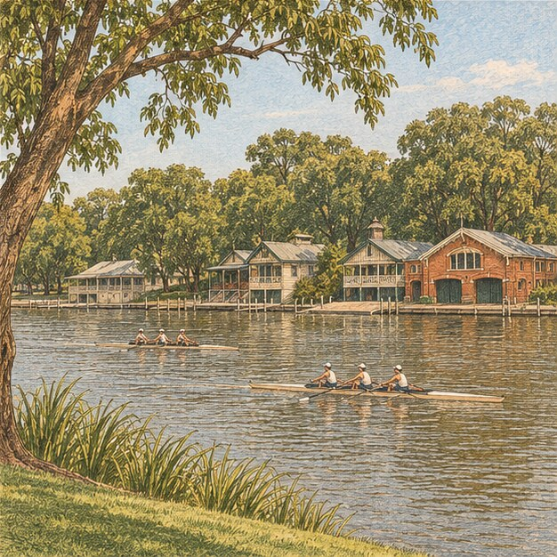
Alexandra Gardens
Сады Александры
Original park illustration created with AI for this guide · Иллюстрация парка, созданная с помощью ИИ для путеводителя
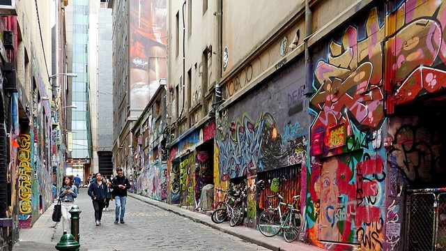
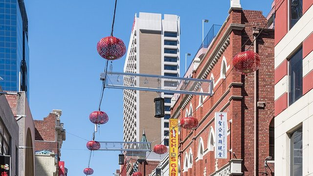
.jpg){kind=link}


,_Queen_Victoria_Market_--_2019_--_1535.jpg){kind=link}